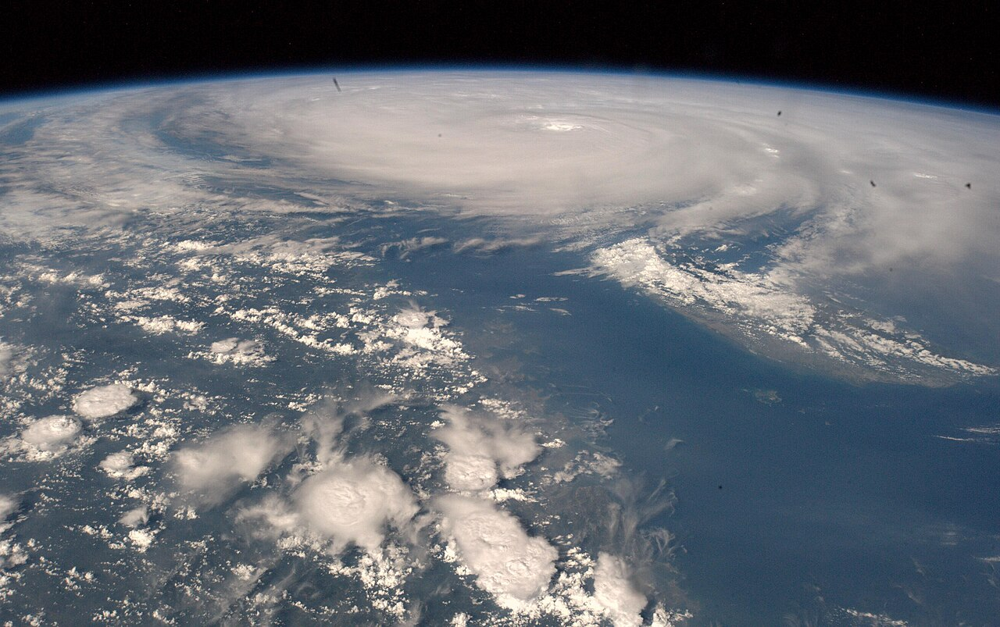

颱風的名字是誰決定的？
一份 140 個名字的名單、14 個出題者、一套不斷除名的規則：命名是為了讓警報更好溝通，但研究顯示名字本身也會悄悄改變人們對風險的判斷。
每年夏秋，颱風一個接一個來，名字卻早已排好：動物、花、食物，有時甚至是形容詞。這些名字既不像人名，也不像編號，它們從哪裡來？名字來自一份由 14 個國家和地區合寫的名單，再由東京的氣象中心依規則使用；這套制度已運行了四分之一世紀。而名字背後還有一個更微妙的問題：一個原本為了方便溝通而取的名字，會不會反過來影響我們對風險的判斷？

一、從討厭的政治人物開始
替風暴取名字，早在十九世紀就有人做過。根據澳洲氣象局的記載，1887 年起，氣象學家 Clement Wragge 就用希臘字母、神話人物和當時的政治人物為氣旋命名[4]；他在 1902 年前後離開氣象界之後，這個做法沉寂了大約六十年。
二十世紀中葉，命名變成制度。香港天文台的資料顯示，美軍氣象預報員為西北太平洋的熱帶氣旋命名超過半個世紀，而且 1978 年以前幾乎全部使用英文女性名字，1979 年起才改為男女名字交替[3]。澳洲則在 1963 年正式採行命名政策，1964 年 1 月誕生第一批官方命名的氣旋 Audrey 與 Bessie；1975 年國際婦女年，澳洲率先改為男女名字並用。
風暴為什麼需要名字？澳洲氣象局給的理由很實際：命名有助於溝通，能提高大眾警覺，也能在多個氣旋同時存在時減少混淆。一個簡短、獨特的名字，比「位於北緯幾度、東經幾度的熱帶氣旋」更適合出現在警報裡。
二、現在的制度：十四個成員合寫的一百四十個名字
2000 年 1 月 1 日起，西北太平洋換了一套完全不同的名單。世界氣象組織（WMO）颱風委員會的 14 個成員各貢獻 10 個名字，組成 140 個名字的共用名單：柬埔寨、中國、北韓、香港、日本、寮國、澳門、馬來西亞、密克羅尼西亞、菲律賓、南韓、泰國、美國與越南。台灣不在其中。
新名單有兩個變化。第一，名字大多不是人名，而是花、動物、鳥、樹、食物或描述性的詞。第二，名單不是按名字本身的字母順序排列，而是依提供名字的成員順序輪流使用；名單跨年連續使用，如果一年最後一個風暴叫 Cimaron，隔年第一個就叫 Jebi。
實際命名由日本氣象廳的東京區域專業氣象中心負責：當熱帶氣旋達到熱帶風暴強度，就使用名單上的下一個名字，並配上一個四位數的國際編號。所以每個颱風其實有兩個身分：一個給公眾記的名字，一個給氣象單位追蹤的編號。
三、造成重大災害的名字，可以除名
名單不是永久的。按照颱風委員會的慣例，遭受嚴重傷亡與損失的成員，可以提議移除造成災害的風暴名字；有時名字也會因為文化上的考量而更換。香港天文台舉的例子是 2006 年 11 月橫掃菲律賓中部的 Durian：豪雨引發大規模土石流，超過 570 人死亡、746 人失蹤，這個名字後來被除名，由 Mangkhut 遞補。
對台灣人來說，最熟悉的例子是莫拉克（Morakot）。2009 年 8 月它重創台灣，2011 年 6 月，中央氣象局宣布 WMO 已將 Morakot 從名單中除名，原因正是它在台灣造成的嚴重災情與傷亡。名字不再循環使用，也讓人記住它所對應的災難。
近年的除名名單也不短。根據 WMO 名單頁面（2026 年 5 月更新），颱風委員會第 58 屆會議一次批准了八個名字的除名：Wipha、Co-May、Matmo、Mitag、Ragasa、Bualoi、Kalmaegi 與 Fung-wong，都是 2025 年風季造成重大損失的風暴；委員會同時要求泰國、越南、美國、菲律賓、北韓與香港提出遞補名字[1]。一次會議就除名八個名字，也讓這份循環使用的名單留下了那個風季的災害紀錄。
四、名字會影響風險判斷嗎？
2014 年，《美國國家科學院院刊》（PNAS）刊登了 Jung 等人的研究：分析 1950 到 2012 年侵襲美國的颶風死亡資料後，他們發現女性名字的颶風造成的死亡人數顯著較高；六個實驗中，受試者對不同名字表達的風險預期與防護意願不同。作者的結論是：性別化命名有一個不幸且非預期的後果[5]。
《PNAS》同卷的另一期隨後刊登 Christensen 與 Christensen 的評論：用同一份資料重新分析，他們發現原結論建立在脆弱的模型上，例如該模型預測颶風 Sandy 會造成近兩萬人死亡，實際數字是 159 人；只看 1979 年（男女交替命名開始）之後的子樣本，未見統計上顯著的名字效果；排除四場死亡破百的極端颶風（其中三場在 1979 年前，依當時慣例自動使用女性名字）之後，同樣未見統計上顯著的效果。原作者也在同刊回覆，雙方的交鋒留在同一卷期刊裡[6]。
這場 2014 年的交鋒，將兩個問題分開：歷史死亡資料的結論受模型選擇影響，實驗則觀察名字如何改變受試者的風險判斷與防護意願。西北太平洋在 2000 年換上的名單，則把命名素材擴展到各地的花鳥、食物與文化。
五、台灣使用名字，卻不參與提供名單
在這套制度裡，台灣使用名字，卻不參與提供名單：台灣不是 14 個貢獻名字的成員，沒有命名的投票權，每年使用的都是其他成員提供、再由東京的氣象中心依序使用的名字。多數颱風過後，名字很快就被忘記；但對台灣人來說，某些名字是災難的索引：莫拉克三個字，讓人想起的往往是 2009 年 8 月的災害經驗，而不只是風速與雨量。
命名權與受災經驗在這裡分離了。提供名字的，是名單上的成員；承受災害的，則是實際被風暴掃過的地方。除名機制是兩者之間少數的連結：它讓受災經驗有機會影響名單，把一個名字從循環使用的名單變成一次性的紀念。
六、標籤是一種基礎設施
回頭看，颱風命名的設計約束一百年來大致不變：要好記、要不混淆、要避免冒犯。澳洲氣象局的現行做法還包括一條人性化的規則：如果名單上的下一個名字剛好與當代知名人物相同，就跳過它，避免冒犯或混淆。
名字既要便於辨識，也會帶來聯想。從政治人物到各地的花鳥魚蟲，命名制度一直在處理這兩種作用之間的取捨。
查證資料來源7 項
實際支持文中事實主張的來源，逐條標註支持的內容；文內如有 [數字] 標記，對應此處編號。
- Western North Pacific and the South China Sea Names（世界氣象組織 WMO） ↗
- Names of Tropical Cyclones（日本氣象廳 RSMC Tokyo） ↗
- Tropical Cyclone Names in the western North Pacific（香港天文台） ↗
- Naming tropical cyclones（澳洲氣象局 BoM） ↗
- Female hurricanes are deadlier than male hurricanes（PNAS, 2014） ↗
- Are female hurricanes really deadlier than male hurricanes?（PNAS 評論，2014） ↗
- Morakot removed from typhoon name list over extensive damage（Focus Taiwan, 2011） ↗
延伸探討
把故事帶回自己的思考
下一個颱風來臨時，你會先看它的名字，還是它的路徑預報？如果標籤注定影響判斷，命名制度該追求絕對的中性，還是乾脆回到純編號？而在你的生活裡，有哪些名字，早已從標籤變成了記憶本身？